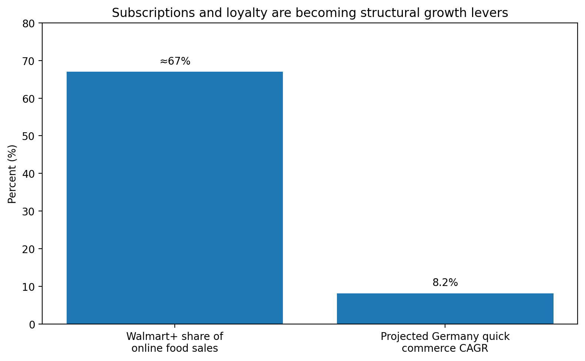
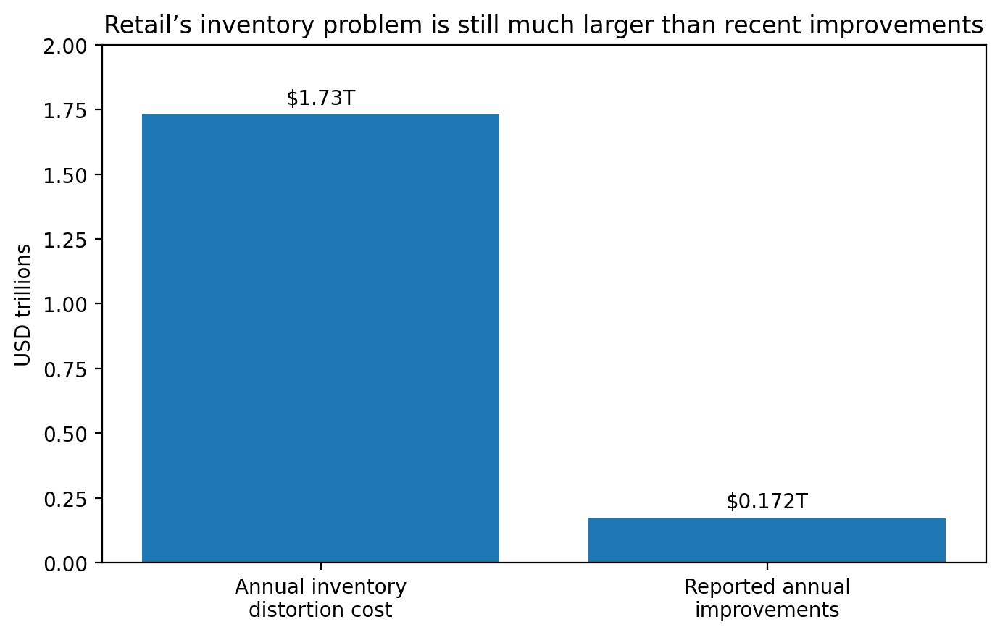

Point of View
A collection of thoughts on product architecture, human-centric systems, and the chaotic beauty of building things that matter.
18 Lessons from Enriching 697,000 Products for $31
Transport failures aren't business verdicts. Coverage isn't accuracy. Prompts belong in version control. The transferable lessons from a solo-built, $31, 697K-product LLM pipeline.
Read Essay arrow_forward
The PM Wiki: Why I Built an LLM-Maintained Knowledge Base for Product Managers
Karpathy published the LLM Wiki pattern as a 75-line idea. Engineers forked it; nobody built it for product managers. So I did — open-source, MIT-licensed, no code required.
Read Essay arrow_forwardEvals: The Product Manager's Quality Gate
AI products ship behaviours you can't fully predict. Evals are how a PM defines "good," measures it, and holds the line — the single most important craft to master now.
Read Essay arrow_forward
The Retention Problem in Quick Commerce: Why Subscriptions Beat Discounts
Quick commerce won on speed. The next battle is habit — and discounts are the wrong weapon. Here is why subscriptions build the loyalty that promotions can only rent.
Read Essay arrow_forward
Why the Next E-Commerce Advantage Is Inventory Intelligence, Not Storefront UX
The storefront can create desire. Inventory decides whether desire becomes revenue — and why the next competitive edge lives in the systems behind the button.
Read Essay arrow_forward
The Future of AI in Product Management
How generative models and autonomous agents are shifting the role of the PM from a coordinator to a high-level orchestrator of intelligence.
Read Essay arrow_forward
Scaling Marketplace Growth
Navigating the cold start problem and optimizing the supply-demand flywheel in hyper-competitive markets through data-driven empathy.
Read Essay arrow_forward
Building with Empathy
Why the most successful products aren't just functional, but deeply resonate with the human experience through intentional design choices.
Read Essay arrow_forward